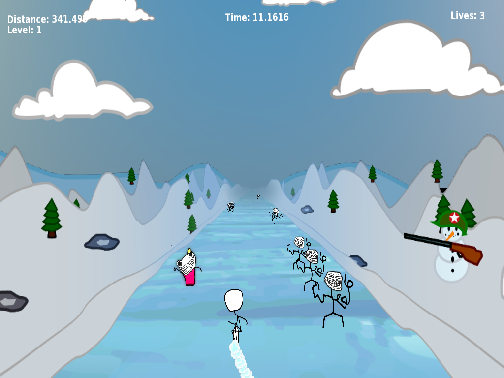
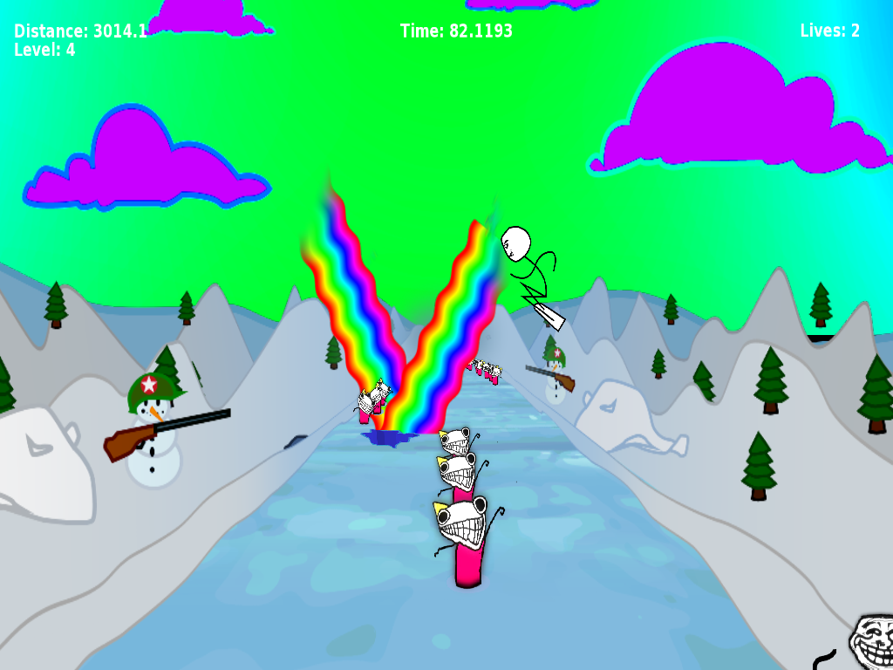

In Soviet Russia
This game is the result of an overnight contest in a team with 3 other guys. The contest theme was meme.
Russia with its long and diverse history has been the focus of many games -- it offers a lot of storytelling potential. Not so In Soviet Russia: this crazy little game lets you steer a snowboarding stick figure through the depths of Siberia, in a hopeless attempt to evade the trolls and endure the unnerving soundtrack. At least, things get a bit more colorful when you collect some rainbows to jump (with space). Move with left/right arrow keys. And if you really need to, brake with the down arrow.

